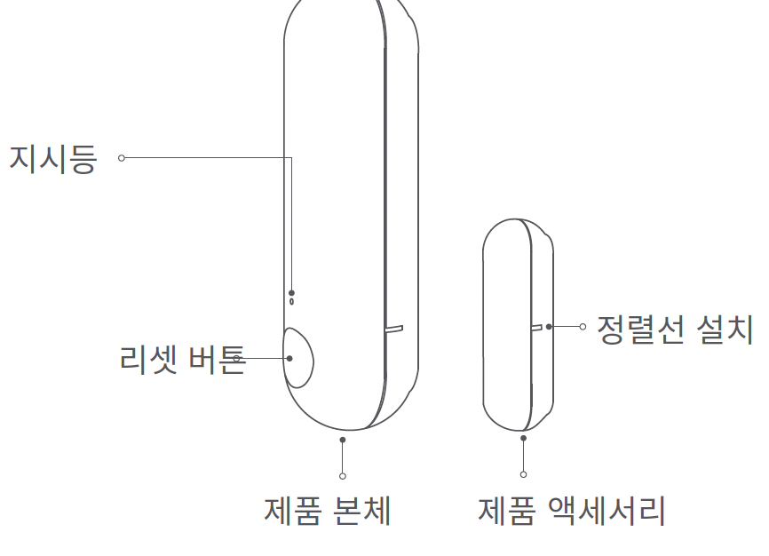
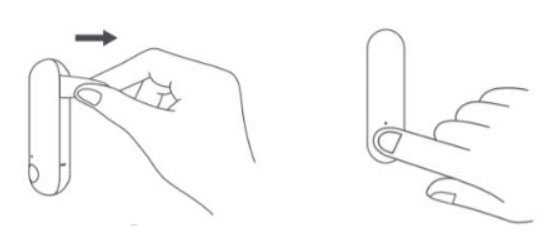
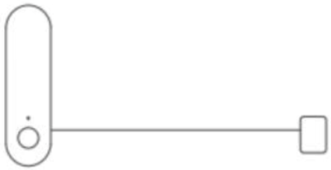
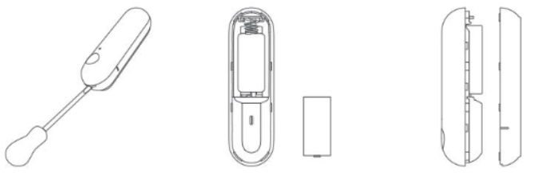

13 열림 감지 센서 P2
13.1 제품 소개
열림 감지 센서 P2는 스레드(Thread) 무선 통신 프로토콜과 고정밀 홀 센서(Hall sensor)를 사용하여 문, 창문, 서랍,옷장 등의 열림 또는 닫힘 여부를 감지할 수 있게 해 줍니다. 문이나 창문의 열림 또는 닫힘 상태에 따라 센서 P2가 매터(Matter) 호환 허브 또는 기타 장치와 함께 다양한 지능형 시나리오를 수행할 수 있습니다.
- 본 제품은 매터 보더 라우터 허브(Matter Border Router Hubs) 기능이 있는 장치와 함께 사용해야 합니다.

- 사용 전 얼라이먼트 라인 설치에 따라 제품을 설치해 주세요.
13.2 빠른 설정
(1) Matter와 호환 되는 앱과 매터와 호환되는 스레드/매터 보더 라우터(Thread/Matter Border Router)가 있는지 확인하십시오.
애플 사용자의 경우 아이폰의 iOS 16.3 이상이어야 하며, 홈 팟 미니 또는 홈팟 2세대 시스텀 버전 16.3 이상이 필요합니다.
구글 사용자의 경우 구글 플레이 스토어에서 구글 홈 앱을 설치하고 앱을 최신 버전으로 업그레이드 해야 하면, 가장에 적어도 하나의 매터 허브를 설치하고 시스템을 최신 버전으로 업그레이드해야 합니다.
지원하는 허브는 다음과 같습니다.
Wi-Fi 라우터: 네스트 와이파이 프로(와이파이 6E)
디스플레이: 네스트 허브(1세대), 네스트 허브(2세대), 네스트 허브 맥스
(2) 절연 탭을 제거합니다. 지시등이 깜빡거리지 시작해야 합니다. 참고로, 지시등이 깜빡거리지 않는 경우 LED 지시등이 깜빡이기 시작할 때까지 리렛 버튼을 5초간 누르고 있다가 놓습니다. 장치가 페어링 모드로 들어갑니다.

(3) Matter 호환 앱을 열고 설명서 또는 Matter QR 설정 코드를 스캔하거나 Matter 설정 번호를 입력하세요.
(3-1) 애플홈 연결
애플 홈을 열고 “액세서리 추가 또는 스캔”을 클릭하세요.
사용 설명서에서 Matter QR 코드를 스캔하거나 Matter 설정 코드 번호를 입력하세요.
장치가 애플 홈 시스템에 연결될 때까지 기다려 주세요.
(3-2) 구글홈 연결
구글 홈을 열고 ’추가’를 누른 후 홈을 선택하면 앱에서 장치를 찾기 시작합니다.
보더 라우터 및 장치를 찾았습니다.
장치가 구글 홈에 등록될 때까지 기다려 주세료.
(4) 다른 시스템과 장치 공유합니다.
Matter 장치가 애플 홈과 같은 Matter 시스템에 등록된 후 초기화 및 다른 시스템에 등록될 필요가 없으로 Matter 호환앱이 다른 시스템과 장치를 공유할 수 있습니다.
’페어링 모드 설정’을 클릭하세요.
시스템에서 Matter 설정 코드 번호와 QR 코드를 생성합니다. 다른 시스템에 연결하는데 사용할 수 있습니다.
(5) 설치하는 동안 센서 장치와 자서의 마커 라인을 정렬합니다. 센서를 도어 또는 창문에 부착합니다. (센서 장치는 이동할 수 없는 표면, 자석은 이동할 수 있는 표면에 설치하는 것이 좋습니다.)
- 제공된 플랫 자석은 보다 복잡한 상황에서 설치 요구 사항을 충족할 수 있으며 제품에 포함된 자석 유닛을 대체 할 수 있습니다.

(6) 배터리 교체
열림 감지 센서 P2 배터리 커버를 슬롯 드라이버로 찔러 배터리를 꺼낸 후 새 CR123A 배터리로 교체합니다(배터리 양극과 음극이 마주 보고 있음을 유의하세요). 그런 다음 배터리 커버를 다시 덫습니다.

13.3 지시등 상태 설명
| 장치 상태 | 지시등 상태 |
|---|---|
| 전원 ON |
|
| 초기화 | LED 지시등이 점멸하기 시작할 때까지 재설정 버튼을 5초간 누르고 있다가 놓으면 장치가 페어링 모드로 들어갑니다. |
| 공장 초기화 | 리셋 버튼을 10회 빠르게 누르면 장치가 공장 초기화 모드로 복구되면 LED 지시등이 점멸합니다. |
| 시스템 등록 성공 | 각 시스템에 성공적으로 등록되면 지시등이 1초간 켜집니다. |
| 시스템 가입 실패 | 지시등이 꺼집니다. 시스템이 연결되어 있지 않으면 장치가 절전 모드로 들어갑니다. |
| 시스템별 삭제 | 각 시스템이 장치를 삭제할 때마다 지시등이 2회씩 점멸하며 마지막 시스템이 장치를 삭제하면 장치가 절전 모드로 설정됩니다. |
| 절전모드에서 깨우기 | 지시등이 점멸하기 시작할 때까지 리셋 버트를 5초간 누르고 있다가 놓으면 장치가 wake-up 및 네트워크 초기화 상태가 됩니다. |
13.4 제품 사양
13.5 주의 사항
본 제품은 장난감이 아닙니다. 이 제품을 아이의 손이 닿지 않는 곳에 두세요.
본 제품은 실내 사용 용도로 설계되었습니다. 습한 환경이나 실외에서 사용하지 마세요.
물기를 조심합니다. 물이나 다른 액체를 제품에 엎지르지 마세요.
본 제품을 열원 부근에 놓지 마세요. 제대로 환기되지 않는 곳에 놓지 마세요.
본 제품을 자체적으로 수리하려고 하지 마세요. support@aqara.kr에 연락하시기 바랍니다.
본 제품은 가정 생활의 오락, 편의성 및 메시지 알림을 개선하는 경우에만 적합합니다. 사용자가 제품 사용 지침을 위반하는 경우, 제조업체는 어떠한 위험 및 재산 손실에도 책임을 지지 않습니다.
13.6 경고
배터리를 잘못된 유형으로 교체하는 경우 폭발의 위험이 있습니다.
사용한 배터리는 지침에 따라 폐기하십시오.
배터리를 삼키지 마십시오. 화학적 화상의 위험이 있습니다.
본 제품에는 코인/버튼 셀 배터리가 포함되어 있습니다. 코인/버튼 셀 배터리를 삼킬 경우 단 2시간 만에 심한 화상을 입을 수 있으며 사망에 이를 수 있습니다.
새 배터리와 사용한 배터는 어린아이의 손이 닿지 않는 곳에 보관하시시오.
배터리를 삼켰거나 배터리가 신체의 어느 부위라도삽입된 것이라고 생각되면 즉시 의사의 진료를 받으십시오.
배터리를 불이나 뜨거운 오븐에 폐기하거나 기계적으로 압쇄하거나 절단하면 폭발을 일으킬 수 있습니다.
배터리를 온도가 매우 높은 환경에 두면 폭발이나 인화성 액체 또는 가스의 누출을 유발할 수 있습니다.
극저기압에 노출된 배터리는 폭발이나 인화성 액체 또는 가스의 누출을 유발할 수 있습니다.
본 기기는 2m 이하의 높이에서만 장착 가능합니다.